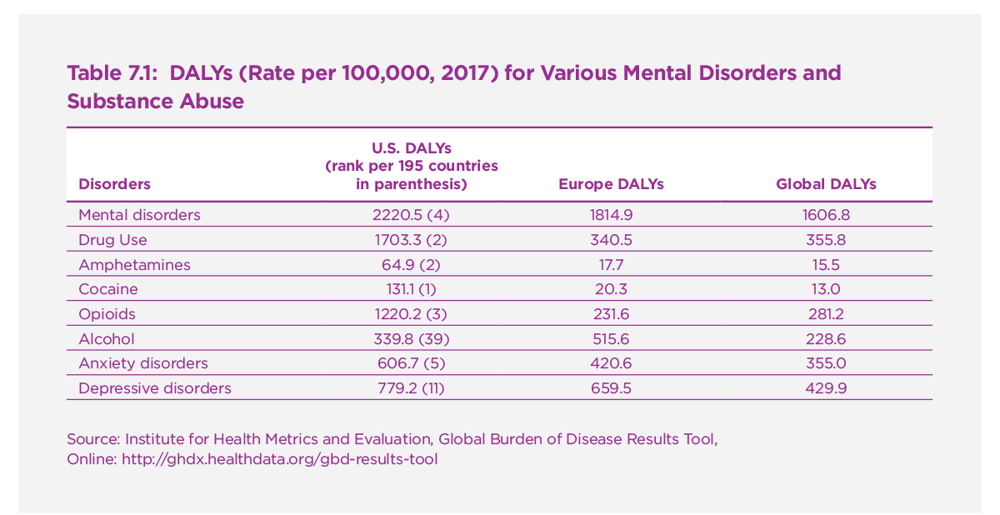

Chapter Contents
- The basic psychology and neuroscience of addiction
- An Epidemic of Addictions in the United States
- Some Implications of Addictions
- Possible Causes of Rising Rates of Addiction
- Mismatches of human nature and modern life
- Rising stress levels associated with increased socioeconomic inequality
- Super-normal stimuli
- Social contagion
- Metabolic disorders
- Failures of Government Regulation
- Policy Implications
- References
The surge of interest in happiness and public policy owes much to the case of the United States. Professor Richard Easterlin (1974) famously noted 45 years ago that happiness in the US had remained unchanged from 1946 to 1970 despite the significant rise of GDP per person. This finding became known as the Easterlin Paradox. It has continued to hold true until today. Indeed, the average life evaluation in the United States, as measured by the Cantril ladder, has declined during the past dozen years, from 7.2 in 2006 to 6.9 in 2018, despite ongoing U.S. economic growth. (See also Twenge, 2019, in this report, Figure 1, on the decline of subjective well-being (SWB) among US adults since 2000).
As I noted in last year’s World Happiness Report (Sachs, 2018), the long-term rise in US income per person has been accompanied by several trends adverse to SWB: worsening health conditions for much of the population; declining social trust; and declining confidence in government. Whatever benefits in SWB might have accrued as the result of rising incomes seem to have been offset by these adverse trends. This year, I propose a common driver of many of America’s social maladies: a mass-addiction society.
Consider the article in this year’s report by Prof. Jean Twenge (2019) on the rapid rise of adolescent depression, suicidal ideation, and self-harm after 2010, and a marked decline in SWB, apparently due in part to the astoundingly large amount of time that young people are spending on digital media: smartphones, videogames, computers, and the like. It’s plausible to describe a significant fraction of adolescents as addicted to screen time, and that is certainly how many young people themselves describe it. They regard their own heavy use of smartphones and other screens as a major problem to overcome, with 54% saying that they spend too much time on their devices (Jiang, 2018). The numbers cited by Twenge are indeed startling: “By 2017, the average 12th grader (17-18 years old) spent more than 6 hours a day of leisure time on just three digital media activities (internet, social media, and texting),” disaggregated by type in Figure 3 of the paper.
An addiction, generally speaking, is a behavior like substance use, excessive gambling, or excessive use of digital media, which individuals pursue compulsively in the face of adverse consequences known to the individual. My argument is that the U.S. is suffering an epidemic of addictions, and that these addictions are leaving a rising portion of American society unhappy and a rising number clinically depressed.
The concept of addiction was originally applied by psychologists and public health specialists mainly or exclusively to substances such as tobacco, alcohol, marijuana, opioids (natural and synthetic), and other drugs. More recently, many psychologists have come to regard various behaviors as potential addictions as well. Such addictive behaviors include gambling; social media; video games; shopping; unhealthy foods; exercise; extreme sports; risky sexual behaviors, and others. Such behaviors may become compulsive, with individuals pursuing them to excess, despite the awareness of their harmful nature to the individuals themselves and to those around them (including family and friends).
The prevalence of addictions in U.S. society seems to be on the rise, perhaps dramatically. These addictions, in turn, seem to be causing considerable unhappiness and even depression. The implication, if correct, is that the U.S. society should be taking actions – as individuals, in schools, at workplaces, and through public policies – to reverse these epidemics, as part of an overall strategy to increase wellbeing in the United States to previous levels and beyond.
At the outset of this chapter it’s worth emphasizing that if the U.S. is indeed suffering from an epidemic of addictions, the implications are crucial not only for public policy but also for the rethinking of economic science. The free-market theory taught in our universities holds that consumers know what’s best for them, with businesses efficiently and appropriately catering to those desires. The prevalence of addiction suggests a very different picture: that individuals may be lured into self-destructive behaviors, notably by businesses keen on boosting sales of their goods and services. Economists of course know of such risks, but drastically underestimate their prevalence and significance.
The basic psychology and neuroscience of addiction
Warren Bickel (2017) provides a very useful overview of addiction theories in psychology and neuroscience. He describes four broad theories, with considerable overlap among them. These are:
Dopamine-related theories
Opponent process theories
Self-control failure theories
Dual decision system theories
These overarching theories have subsidiary theories as well. Bickel evaluates these four main theories according to their ability to answer six benchmarks questions:
Why are some commodities or behaviors addictive while others are not?
Why does addiction follow some common developmental trends?
Why do some individuals decrease their valuation of non-addictive commodities?
Why do individuals with addictions engage in self-defeating patterns of behavior?
Why do individuals with addictions engage in other unhealthy behaviors?
What interventions are implied by the theories?
The dopamine-related theories emphasize the role of dopamine (DA) pathways as accounting for the allegedly rewarding effects of addictive substances or behaviors. In particular, addictive substances and behaviors are hypothesized to cause a spike in dopamine release in the mesolimbic DA pathway linking the ventral tegmental area (VTA) with the nucleus accumbens, as well as other DA pathways (to the frontal cortex and the dorsal striatum). For many years it was thought that DA was itself a “pleasure” neurotransmitter. Now, DA is hypothesized to heighten the salience of stimuli, leading to a “craving” for the addictive substance or activity.
The opponent process theory hypothesizes a dysregulation of the neural reward circuitry, such that a substance or behavior that initially stimulates pleasure (or positive hedonic valence) later stimulates an anti-reward system that causes dysphoria (or negative hedonic valence) in the case of withdrawal. The basic idea is that drug-taking or addictive behaviors become compulsions to avoid the dysphoria associated with withdrawal.
The self-control failure theories hypothesize that self-control in general is an exhaustible resource, and that when that resource is depleted, because of stress, exhaustion, or other reasons, the result is short-sighted decisions and impulsivity. In general terms, stress of various sorts leads to depletion, which leads to the addictive behavior.
The dual-decision system theory is based on the core idea that mental processes involve complex interactions of multiple neurobiological pathways. At least since the ancient Greeks, philosophers have distinguished between different parts of the “soul” or mind. Plato distinguished between reason and emotions; Aristotle divided the soul into three parts, the nutritive soul (shared with all plants and animals), the appetitive soul (shared with animals), and the rational soul (distinctly human). For both Plato and Aristotle, the rational soul battled the emotions and desires emanating from the animal soul. Modern psychologists have also distinguished between different pathways of decision making, for example conscious versus unconscious decision making, or alternatively, “hot” versus “cold” decision systems, also called “fast” versus “slow” systems by Daniel Kahneman.
Neuroscientists try to link these hypothesized decision pathways to specific brain structures and neuronal networks. The dominant current thinking distinguishes between a reward-driven impulsive pathway centered in the DA-mediated mesolimbic system and an executive system of top-down decision making mediated by the pre-frontal cortex (PFC). The executive system is responsible for complex problem solving, planning, and choices involving the future, while the DA-mediated mesolimbic system gives salience to immediate rewards associated with conditional stimuli. One can loosely (though far from precisely) associate the PFC with Aristotelian rationality and the mesolimbic system with “the appetitive soul” or Plato’s notion of the emotions.
In Bickel’s theory, normal and healthy human choice is governed by the inputs of both systems, while addictions result from the dysregulation of the two systems, specifically from the dominance of the DA-mediated system relative to the PFC. He associates the weakening of PFC-linked decision making with a rise in time discounting. Specifically, the weakening of the PFC relative to the mesolimbic system is hypothesized to give a larger relative weight to immediate gratification (as guided by the mesolimbic system) relative to long-term costs and benefits (as guided by the executive system of the PFC). In some theories, a third pathway, associated with the insular cortex modulates the interactions of the PFC and the mesolimbic pathways.
In Bickel’s interpretation, addiction is a disorder marked by an abnormally high rate of time discount, leading to choices of immediate gratification even when the choice will bring known and predictable high costs in the longer term. Some evidence suggests that dysregulation of the insular cortex “hijacks” the PFC functions that would otherwise resist the short-term temptations. The key to overcoming addiction, in this view, is to strengthen the PFC once again to play its crucial role in long-term planning, complex decision making, and the inhibition of impulses driven by the mesolimbic system.
An Epidemic of Addictions in the United States
There is no single comprehensive epidemiology of addictive behaviors in the United States, in part because there is no consensus on the definition and diagnosis of addiction, and in part because the data are not comprehensively collected and analyzed to understand the prevalence and co-morbidities of various kinds of addictions. It is clear that some individuals are highly vulnerable to multiple addictions, in part because of the underlying neurobiological mechanisms of addiction that are common across addictive behaviors, e.g. a weakening of executive control.
The US is in the midst of epidemics of several addictions, both of substances and behaviors. Recent data of the Institute of Health Metrics and Evaluation (IHME) show that the US has among the world’s highest rates of substance abuse. The estimates for 2017 are shown in Table 1, comparing the US, Europe, and Global rates of disease burden for various categories of substance abuse. The measures are the Disability-Adjusted Life Years (DALYs) per 100,000 (100K) population. For example, the US lost 1,703.3 DALYs per 100K population from all forms of drug use, the second-highest rate of drug-use disease burden in the world. The US rate compares with 340.5 DALYs per 100K in Europe, roughly one-fifth of the US rate.
Among all 196 countries, the US ranks 2nd overall in DALYs lost to all drug use disorders; 1st in DALYs from cocaine use; 3rd in DALYs from opioid addiction; and 2nd in DALYs from amphetamine use. The US is moderate only for alcohol use disorders, ranking 39th. These very heavy burdens of substance disorders are matched by the high US rankings on other mental disorders. The US ranks 5th in the world in DALYs from anxiety disorders and 11th in the world from depressive disorders. Across all mental disorders, the US ranks 4th in the world.
While there is no comprehensive data on the prevalence of addictions, academic studies and government reports suggest addiction epidemics in several areas, including the following (with prevalence estimates cited by Sussman, 2017, Table 6.1 and Table 7.1):
- Marijuana: 7% of 18-year-olds, 2% of 50-year-olds;
- Illicit drugs, non-marijuana: 8% of 18-year-olds, 5% of 50-year-olds
- Tobacco: 15% of US adult population
- Alcohol: 10% for older teenagers and adults
- Food addiction: 10% of US adult population (= 25% of obese population)
- Gambling: 1-3% of US adult population
- Internet: 2% of US adult population
- Exercise: 3-5% of US adult population (22-26% of college youth)
- Workaholism: 10% of US adult population
- Shopping addiction: 6% of US adult population
- Love and sex addiction: 3-6% of adult population
According to Sussman’s estimates, around half of the population suffers from one or more addictions at any one time.
There is a tremendous co-occurrence of addictions, consistent with the dual-decision theory that attributes addictive behavior to the dominance of the DA-mesolimbic circuitry relative to the PFC circuitry. Individuals with addictions may choose several kinds of short-run boosts to dopamine over their long-term wellbeing. Sussman cites voluminous data on the co-occurrences of addictions, with 30% to 60% co-occurrence of cigarettes, alcohol, and other drug use disorders. He similarly cites many studies linking tobacco use, drinking and gambling; substance abuse with sex addiction; substance abuse with Internet addiction, shopping addiction, and exercise addiction. A recent study by Lindgren et al. (2018) demonstrates the common neurobiological mechanisms of food addiction and substance abuse. As the article notes, “Food consumption is rewarding, in part, through activation of the mesolimbic dopamine (DA) pathways. Certain foods, especially those high in sugar and fat, act in a similar way to drugs, leading to compulsive food consumption and loss-of-control over food intake.”
Some Implications of Addictions
Addictive behaviors are associated with high economic costs, personal unhappiness, and co-morbidities with depressive disorders (MDD) and other mood and anxiety disorders. Addictions directly lower wellbeing through their direct impacts on poor decision making and outcomes, social isolation and stigmatization, criminal activities to obtain illicit substances or to pursue illicit behaviors, personal shame, and other kinds of distress. Addictions may also give rise to clinical depression through mood dysregulation or secondarily to the acute stresses resulting from the addiction. At the same time, depression and other mood disorders may give rise to addictive behaviors, as individuals try to “self-medicate” their dysphoria through resort to substance abuse or addictive behaviors.
The economic costs run into the hundreds of billions of dollars per year, certainly several percent of GDP. One recent online compilation citing numerous government studies, suggest an annual cost of around $820 billion per year, more than 4% of GDP (Forogos 2018). Such estimates should certainly not be regarded as definitive. The losses directly attributed to addictions are hard to determine. Moreover, by summing over the estimated costs of individual addictions, one is bound to double-count many costs, as many individuals are addicted to multiple substances and behaviors, with the resulting absenteeism and healthcare costs most likely attributed to each of the individual addictions. On the other hand, such estimates almost surely fail to incorporate an accurate monetary measure of the immense pain and suffering resulting from the addictions.
Possible Causes of Rising Rates of Addiction
Many studies indicate a rising prevalence of several addictions, certainly including opioids, Internet-related, and eating-related, and possibly others. These epidemics are accompanied by rising suicide rates and overdoses related to substance abuse, rising obesity related to eating addictions, and rising adolescent depression apparently related to Internet and related addictions. While there is no overarching consensus on the reasons for the rising prevalence of addictions in American society, several broad hypotheses have been put forward for consideration. These hypotheses are inter-related and by no means mutually exclusive.
Mismatches of human nature and modern life
The first hypothesis, as expressed cogently for example by Prof. Lee Goldman in his book Too Much of a Good Thing (2015), is that several prevalent addictions result from a discrepancy between our evolutionary heritage and our current life conditions. As Goldman explains, “Early humans avoided starvation by being able to gorge themselves whenever food was available. Now that same tendency to eat more than our bodies really need explains why 35 percent of Americans are obese and have an increased risk of developing diabetes, heart disease, and even cancer.” Similarly, the ancient risk of fatal dehydration created a craving for salt and water, which now leads many people to consume an excess of salt that in turn contributes to high blood pressure.
Rising stress levels associated with increased socioeconomic inequality
The second hypothesis, powerfully described by Profs. Richard Wilkinson and Kate Pickett in their new book The Inner Level (2019), argues that high and rising income inequality in high-income societies leads to stress that leads to addiction: “As we have seen, trying to maintain self-esteem and status in a more unequal society can be highly stressful … [T]his experience of stress can lead to an increased desire for anything which makes them feel better – whether alcohol, drugs, eating for comfort, ‘retail therapy’ or another crutch. It’s a dysfunctional way of coping, of giving yourself a break from the relentlessness of the anxiety so many feel.”
Super-normal stimuli
The third major hypothesis points to a core design feature of a market economy: addictive products boost the bottom line. Americans are being drugged, stimulated, and aroused by the work of advertisers, marketers, app designers, and others who know how to hook people on brands and product lines. If Sigmund Freud is the psychologist who made the “unconscious” the basis of his theories, it was his nephew, Edward Bernays, the inventor of modern public relations (PR), who preyed on the unconscious to sell goods. Bernays trafficked in behavioral conditioning, for example, famously associating cigarette smoking with sexual allure of the women models who were photographed smoking in public, a dubious “first” for women.
The academic and business literature is rife with examples of businesses “spiking” their products by associating them with various kinds of craving: sex, power, fame, euphoria, or others. As Adam Alter (2017) powerfully describes in his book Irresistible: The Rise of Addictive Technology and the Business of Keeping Us Hooked, the tech companies are aggressively adjusting their apps to induce more screen time (e.g. by including time delays or other screen signals designed to prompt our heightened attention and rush of dopamine). Slot machine owners program their machines so that they give a payout after a long stretch of losses, in order to hook the individual on continued gambling. Food companies spike their products with extra sugar and salt, highly processed foodstuffs, and fats that trigger a craving response. The tobacco industry added nicotine in order to induce more smoking addiction.
Social contagion
For countless behaviors, including those that ultimately lead to addiction, peer imitation and peer pressure are often decisive in leading an individual to an addiction. Zhang et al. (2018) review studies showing that “friendship networks and weight outcomes/behaviours were interdependent, and that friends were similar in weight status and related behaviours.” Social effects have been identified for marijuana (Ali et al., 2011), alcohol (Rosenquist, 2010), cocaine (Barman-Adhikari, 2015), gambling (Lutter, 2018), and other addictions.
Metabolic disorders
Illicit drugs, we know, have powerful and direct pharmacological impacts on the brain that contribute to their addictive nature and their long-term harmful effects. Direct physiological impacts may be contributing to the addictive qualities and adverse consequences of addictions other than illicit drugs. For example, recent research (Small & DiFeliceantonio, 2019) suggests that processed foods may short-circuit the gut-brain signaling network that controls satiety. As the authors conclude, “This raises the possibility that how foods are prepared and processed, beyond their energy density or palatability, affects physiology in unanticipated ways that could promote overeating and metabolic dysfunction.” (p. 347)
Smartphone use, similarly, may have physiological affects beyond the psychological effects of peer pressure, social anxieties, exposure to onscreen violence, and so forth. Lissak (2018) reports that “excessive screen time is associated with poor sleep and risk factors for cardiovascular diseases such as high blood pressure, obesity, low HDL cholesterol, poor stress regulation (high sympathetic arousal and cortisol dysregulation), and insulin resistance.” (Lissak, p. 149)
Failures of Government Regulation
In view of the multiple addictive epidemics underway in the United States that are contributing to shockingly adverse public health outcomes – obesity rates among the highest in the world; rising rates of adolescent depression; rising age-adjusted suicide rates since the year 2000; a searing opioid epidemic; and falling overall life expectancy – one would expect a major public policy response. Yet the shocking truth is that U.S. public health responses have been small, even insignificant, to date. If anything, the epidemics expose the remarkable power of corporate vested interests in American political life, power that is so great that it has forestalled any effective responses that would jeopardize corporate profits and control.
Let me briefly describe three examples.
First, much of America’s opioid epidemic is itself the result of deliberate corporate activity by one now-notorious company, Purdue Pharma, owned by the Sackler family. As described in many recent exposes, Purdue Pharma developed and aggressively marketed two highly addictive drugs, MS Contin and Oxycontin, despite inside knowledge of the dangers of addiction. The company used hard-sell approaches such as kickbacks to doctors who prescribed the drugs. When the addiction risks began to be noted, the company denied or downplayed them. Even after paying a large fine and incurring criminal convictions in 2007, the company continued its relentless and reckless policies of pushing the addictive medicines onto unsuspecting patients. In early 2019, it has begun talk of entering bankruptcy to protect the assets against future lawsuits.
Second, the beverage industry has strenuously resisted responsibility or regulation for the obesogenic risks of sugar-based sodas. It has fought relentlessly against sugar taxes aimed to induce consumers to buy less expensive, safer beverages. And when one city, San Francisco, imposed a mandatory warning on sugar-based beverages (“Drinking beverages with added sugar(s) contributes to obesity, diabetes, and tooth decay. This is a message from the City and County of San Francisco.”), the American Beverage Association and other plaintiffs successfully sued San Francisco. In a ruling that epitomizes the alarming state of US public policy, the US Court of Appeals found that the mandatory warning was an infringement of commercial free speech under the First Amendment. (US Court of Appeals, 2019)
Third, processed food industry leaders, such as Heinz Kraft, have strenuously resisted claims that highly processed foods are obesogenic, contributory to metabolic disease, and in need of regulation. Instead, the industry has mocked these warnings. In a highly noted and publicized advertisement during the 2019 Super Bowl, for example, the Heinz Kraft subsidiary Devour Foods indeed mocks food addiction by glorifying it instead. In the Devour Foods Super Bowl ad, an alluring young woman declares, “My boyfriend has an addiction,” showing the boyfriend gobbling up his food. (In the uncensored version of the ad, she declares that the addiction is “to frozen-food porn.”) She implies that she tried to lure him away from the food through spiced-up sex, but notes of the food, “It’s hard to resist.” The ad ends with the message: “Never just eat. Devour.”
The list of corporate recklessness in the US goes on and on, and now especially implicates the Tech industry as well, which has played no constructive role to date in addressing the alarming trends of adolescent screen time and the ensuing depressive disorders described by Twenge (2019) in this volume. As every major study of Facebook has shown, the company is duplicitous in use of personal data, relentlessly focused on its bottom line, and steadfastly dismissive of the dire consequences emanating from the use of its product and services.
Policy Implications
The US has had, by now, two startling wake up calls: back to back years of falling life expectancy. Major studies have documented the rising suicide rates and substance misuse. Psychologists have been decrying the apparently soaring rates of addictive disorders and seemingly associated mental disorders, including major depressive disorders and a range of anxiety disorders. Measured subjective wellbeing has declined during the past 10 years, and there are reasons to believe that the sheer scale of addictive disorders is probably implicated this decline in SWB, though studies have not yet made that definitive link.
A public policy response built around wellbeing rather than corporate profits would place the rising addiction rates under intensive and urgent scrutiny, and would design policies to respond to these rising challenges.
Such responses would perhaps begin with the following types of measures:
- Stringent regulations of the prescription drug industry, and a much tougher crackdown on companies like Purdue Pharma that knowingly contribute to massive substance abuse;
- Urgent and honest public reflection and debate on the sociology of addiction epidemics, noting the role of high and rising income inequality in unleashing addictions;
- A rapid scale up of publicly financed mental health services for addiction, anxiety and mood disorders;
- Strong and effective regulations to limit advertising and to enforce warning messages regarding addictive products and activities, including digital technologies, obesogenic foods, lotteries and gambling activities;
- Stringent restrictions of advertising to young children and adolescents of potentially harmful products and activities;
- Mindfulness programs in schools to help children to avoid the lures of substance and behavioral addictions.
Longer-term measures would include public policies to reduce stress levels in society, including greater job and healthcare security, reduced inequalities of income and wealth, healthier work-life balance, and greater integration of health and wellbeing programs in work, schools and communities. Many of these programs, and the demonstrably beneficial effects, are described in the Global Happiness and Wellbeing Policy Report 2019 (SDSN, 2019).
Table 7.1. DALYs (Rate per 100,000, 2017) for Various Mental Disorders and Substance Abuse

Source: Institute for Health Metrics and Evaluation, Global Burden of Disease Results Tool,
Online: http://ghdx.healthdata.org/gbd-results-tool
References
Ali, M. M., Amialchuk, A., & Dwyer, D. S. (2011). The Social Contagion Effect of Marijuana Use Among Adolescents. PloS one, 6(1), e16183.
Alter, A. (2018). Irresistible: The rise of addictive technology and the business of keeping us hooked. New York: Penguin Press.
American Beverage Association v. City & County of San Francisco (United States Court of Appeals for the Ninth Circuit February 31, 2019).
Barman-Adhikari, A., Rice, E., Winetrobe, H., & Petering, R. (2015). Social network correlates of methamphetamine, heroin, and cocaine use in a sociometric network of homeless youth. Journal of the Society for Social Work and Research, 6(3), 433-457.
Bickel, W. K., Mellis, A. M., Snider, S. E., Athamneh, L. N., Stein, J. S., & Pope, D. A. (2018). 21st century neurobehavioral theories of decision making in addiction: Review and evaluation. Pharmacology Biochemistry and Behavior, 164, 4-21.
Easterlin, R. A. (1974). Does economic growth improve the human lot? Some empirical evidence. In Nations and households in economic growth (pp. 89-125). Academic Press.
Fogoros, R. N., & T., B. (2018). The Costs of Drug Use to Society. Retrieved from https://www.verywellmind.com/what-are-the-costs-of-drug-abuse-to-society-63037
Goldman, L. (2015). Too Much of a Good Thing. Little, Brown and Company.
Institute for Health Metrics and Evaluation. (2017). Global Burden of Disease [Results Tool]. Retrieved from http://ghdx.healthdata.org/gbd-results-tool
Jiang, J. (2018). How teens and parents navigate screen time and device distractions. Pew Research Center for Internet and Technology, Retrieved from http://www. pewinternet. org/2018/08/22/how-teens-and-parents-navigate-screen-time-and-device-distractions.
Lindgren, E., Gray, K., Miller, G., Tyler, R., Wiers, C. E., Volkow, N. D., & Wang, G. J. (2018). Food addiction: A common neurobiological mechanism with drug abuse. Front Biosci (Landmark Ed), 23, 811-836.
Lissak, G. (2018). Adverse physiological and psychological effects of screen time on children and adolescents: Literature review and case study. Environmental research, 164, 149-157.
Lutter, M., Tisch, D., & Beckert, J. (2018). Social Explanations of Lottery Play: New Evidence Based on National Survey Data. Journal of gambling studies, 1-19.
Sachs, J. D. (2018). America’s health crisis and the Easterlin paradox. World happiness report, 218, 146-159.
Small, D. M., & DiFeliceantonio, A. G. (2019). Processed foods and food reward. Science, 363(6425), 346-347.
Sussman, S. (2017). Substance and behavioral addictions: Concepts, causes, and cures. Cambridge University Press.
Twenge, J. (2019) The sad state of happiness in the United States and the role of digital media. In Helliwell, J., Layard, R. and Sachs, J., eds., World Happiness Report 2019, xx-xx.
Wilkinson, R. G., & Pickett, K. (2019). The inner level: How more equal societies reduce stress, restore sanity and improve everyones well-being. New York: Penguin Press.
Zhang, S., de la Haye, K., Ji, M., & An, R. (2018). Applications of social network analysis to obesity: a systematic review. Obesity reviews, 19(7), 976-988.
Back to the 2019 report